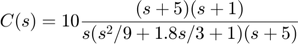
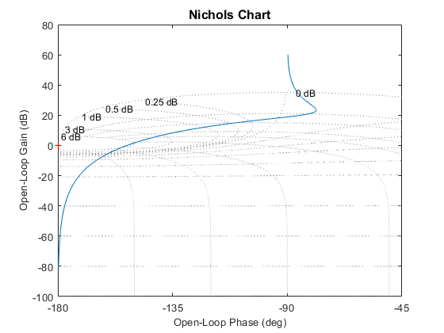
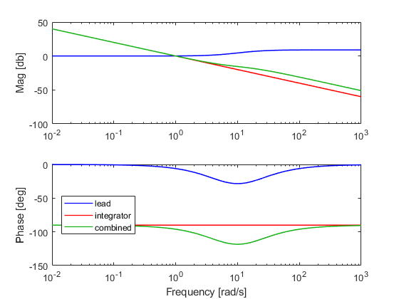

Working without Control System Toolbox
No Control System Toolbox? no worries! Open Qsyn provide two native classes that can performs all basic CST operations (and more):
Contents
Dynamic Controllers
qctrl objects function as LTI objects in CST, and is suitable for designning feedback compensators and filters in QFT. Basic generation is using a zeros-poles-gain (ZPK) format
C = qctrl(z,p,k)
For exmaple: consturct the controller

z = [-5 -1]; % zeros p = [0 roots([1/9 1.8/3 1]).' -5]; % poles k = 10; C = qctrl(z,p,k)
C =
(s/5+1)(s+1)
10---------------------------
s(s^2/9+1.8*s/3+1)(s/5+1)
Continuous-time openQsyn QCTRL object
The output display indicates that the parameters were correctly inserted. We notice that the pole and zero at -5 cancels. To obtain a minimal realization use minreal (as you would do in CST),
C = minreal(C)
C =
(s+1)
10--------------------
s(s^2/9+1.8*s/3+1)
Continuous-time openQsyn QCTRL object
Other functionallities of CST are supported. For example, a Bode plot:
w = logspace(-2,3,500); bodeplot(C,w)
ans =
1×2 Axes array:
Axes Axes
 Another functionality of the qctrl class is to easily generate elementry controllers such as lead compensators, lag compensators, PID controllers, etc. For exmaple, a 30 degrees lead compensator with max phase lead at 10 rad/s can be generated as follows
Clead = qctrl.lead(30,10)
Clead =
(1-s/5.95871)
2.81641---------------
(1-s/16.7822)
Continuous-time openQsyn QCTRL object
A serial connection is done by the series command, or a simple *. For exmaple, if we wich to add an integrator to our lead compensator:
Cint = qctrl([],0,1); Cfull = Clead*Cint bodeplot(Clead,w,'color',[0 0 1]); hold on bodeplot(Cint,w,'color',[1 0 0]); bodeplot(Cfull,w,'color',[0.1 0.7 0.1]); legend('lead','integrator','combined','location','w')
Cfull =
(1-s/5.95871)
2.81641----------------
(1-s/16.7822)s
Continuous-time openQsyn QCTRL object
ans =
1×2 Axes array:
Axes Axes
ans =
1×2 Axes array:
Axes Axes
ans =
1×2 Axes array:
Axes Axes
 Frequency Response
The second class the is used for CST-like operation is qfr. An object of this class simply stores the freqeuncy response data along a given freqeuncy vector. Note that for a conviniant use in QFT design, the response data is stored in Nichols form [deg+i*db], and the frequency in rad/s. This class is used for exmaple for representing a nominal response inside a qplant.
A qfr object is typically constracted using the syntax
f = qfr(response,frequency)
where reposne in Nichols form, and frequency in rad/s. For example, generating a qfr from the previously constructed Cfull,
res = nfr(Cfull,w); % extract the Nichols form frequency response
f = qfr(res,w);
Alterantively, we could have just write the one line
f = qfr(Cfull,w);
Conversion from Control System Toolbox
If you do have CST, but wish to work in (the superior) openQsyn native classes, an easy conversion can be done from any CST LTI object to either a qctrl or a qfr. For exmaple
G = tf([4 5 6],[1 34 6 55],0.1); % some random tf
Q = qctrl(G)
q = qfr(G,w)
Q =
(s^2/1.5+1.02062*s/1.22474+1)
0.15625-------------------------------------------------
(s/33.8708+1)(s^2/1.62382+0.101391*s/1.27429+1)
Discrete-time openQsyn QCTRL object, sample time: 0.1
q =
qfr with properties:
frequency: [500×1 double]
response: [500×1 double]
Going backwords is also possible:
G1 = tf(Q) G2 = zpk(Q)
G1 =
0.1563 z^2 + 0.1953 z + 0.2344
------------------------------
z^3 + 34 z^2 + 6 z + 55
Sample time: 0.1 seconds
Discrete-time transfer function.
G2 =
0.15625 (z^2 + 1.25z + 1.5)
---------------------------------
(z+33.87) (z^2 + 0.1292z + 1.624)
Sample time: 0.1 seconds
Discrete-time zero/pole/gain model.